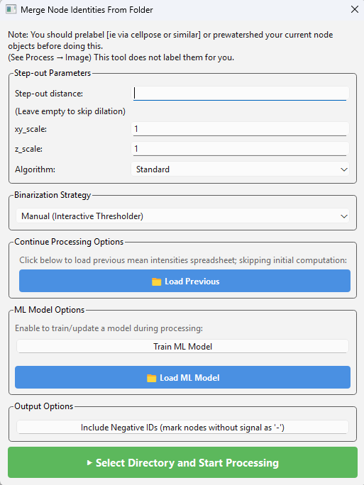

All File Menu Options
The file menu is used exclusively for saving and loading. Networks should be saved from the network table in the bottom right rather than from here.
New Session
Selecting ‘New Session’ will give a confirmation prompt asking to make sure your current session is saved. If you proceed, the session will be reset.
Save
The save menu writes everything to the active directory — as referenced by the command window running the program — using generic names, making it suitable for quick saves.
Save Current Session — saves all active core NetTracer3D properties (see Properties of a Network3D Object) into the current session folder, prompting you to create one if none exists.
Save Nodes — saves the nodes channel into the current session folder as
labelled_nodes.tif.Save Edges — saves the edges channel into the current session folder as
labelled_edges.tif.Save Overlay 1 — saves Overlay 1 into the current session folder as
overlay_1.tif.Save Overlay 2 — saves Overlay 2 into the current session folder as
overlay_2.tif.Save Highlight Overlay — saves the highlight overlay into the current session folder as
Highlighted_Element.tif.
Save As
The save as menu prompts for a filename and directory.
Save Current Session As — prompts for a new folder in which to dump all properties of the current session (see Properties of a Network3D Object). This folder can later reload the session, provided the filenames within are unchanged.
Save Nodes As — saves the nodes channel as a
.tif.Save Edges As — saves the edges channel as a
.tif.Save Overlay 1 As — saves Overlay 1 as a
.tif.Save Overlay 2 As — saves Overlay 2 as a
.tif.Save Highlight Overlay As — saves the highlight overlay as a
.tif.Save Misc Property - Use to save the node_identities as both a
.csvand.json, the node_centroids as a.csv, or the node communities as a.csv.
Tip
Ending any .tif save name with compressed.tif writes a compressed
version, which can be considerably smaller for labeled images while remaining
readable by most TIFF readers.
Load
The load menu prompts for files to open.
Note
NetTracer3D does not handle channels of differing dimensions well. Attempting to load one prompts to auto-resize the image to match the dimensions of those already in the image viewer window. Accepting is advised; declining risks crashing the program.
Load Previous Session — prompts for a folder containing saved outputs from a previous session, typically generated by Save (As) Network3D Object. When assembling the Network3D object, the program looks for the generic filenames assigned by that function, or by the generic Save options; files under other names are ignored.
Load Nodes — loads a
.tif/.tiff/.nii/.jpg/.jpeg/.pngimage into the nodes channel. Grayscale only; color images are converted.Load Edges — loads a
.tif/.tiff/.nii/.jpg/.jpeg/.pngimage into the edges channel. Grayscale only; color images are converted.Load Overlay 1 — loads a
.tif/.tiff/.nii/.jpg/.jpeg/.pngimage into the Overlay 1 channel. Supports color images.Load Overlay 2 — loads a
.tif/.tiff/.nii/.jpg/.jpeg/.pngimage into the Overlay 2 channel. Supports color images.Load Full Sized Highlight Overlay — loads a
.tif/.tiff/.nii/.jpg/.jpeg/.pngimage into the highlight overlay.For sufficiently large images, the highlight overlay is rendered only on the visible plane rather than as a full 3D image, though the full overlay is rendered for any method requiring it, such as 3D visualization. In such cases, if a highlight overlay referencing the nodes exists and something else is loaded into the nodes channel, the overlay is altered to reference the new nodes. Loading the desired overlay directly with this function bypasses the plane-based overlay — useful for 3D visualization.
Load Network — loads a
.csv/.xlsxfile containing network data in the structure NetTracer3D expects, which is the same structure it saves to.Load From Excel Helper — opens the excel helper, a separate GUI for converting less-structured
.csvor.xlsxspreadsheets obtained elsewhere into NetTracer3D properties (see Using the Spreadsheet Loader). Currently supports Node Centroids, Node Identities, and Node Communities.Load Misc Properties → Load Node IDs — loads a
.json/.csv/.xlsxfile containing node IDs in the structure NetTracer3D expects. You are then asked whether to update/merge or replace the existing node IDs. Updating adds any new, unique IDs to each node’s identity list, which is useful for combining identities encoded for the same nodes across different sessions. Replacing overwrites what is present, matching the behaviour when a new session is loaded.Load Misc Properties → Load Node Centroids — loads a
.csv/.xlsxfile containing node centroids in the structure NetTracer3D expects.Load Misc Properties → Load Edge Centroids — loads a
.csv/.xlsxfile containing edge centroids in the structure NetTracer3D expects.Load Misc Properties → Load Node Communities — loads a
.csv/.xlsxfile containing network communities in the structure NetTracer3D expects.
Images → Node Identities
Merge Nodes
Prompts for a .tif/.tiff file corresponding to an additional labeled
nodes image to merge with the current nodes channel. A directory containing a set
of .tif/.tiff images may be selected instead to merge many at once.
This allows nodes from several types of images — heterogeneous structures or cell types, for example — to be compared. Images are generally segmented and labeled individually before merging.
Labels cannot currently overlap, as they are being combined into a single image.
To mitigate this, you are prompted to generate centroids for each image prior to merging. Select this to have each image’s true centroid enter NetTracer3D regardless of the appearance of the merged output. An optional downsample factor finds centroids on a downsampled image before transposing the result, at the risk of losing especially small nodes.
Merging auto-assigns node IDs based on the name of the
.tif/.tiffbeing merged, while the original nodes acquire the nameroot_nodes. These IDs cannot be changed within NetTracer3D — save the node IDs as described above, reassign the names with the excel helper or directly in spreadsheet software, then reload with Load → Load Misc Properties → Load Node IDs.
Assign Node Identities From Overlap With Other Images
This is the main route for assigning node identities in multichannel data. Either segment your cells or create hexagon nodes from the generate menu, place all desired channels in a folder, and run this function. It iterates through the channels in the folder, assigning cells an identity based on minimum and maximum thresholds of that cell’s fluorescent intensity.
With labeled nodes loaded into the nodes channel, running this opens the following menu:


Search region expansion
Step-out distance — the distance node markers search outwards for overlap, estimating a cell radius. This can also be precomputed in Process → Image → Dilate.
xy_scale — the true scale of the xy plane of the image.
z_scale — the true scale of the z-step size of the image. With parameters 2 and 3 entered correctly, parameter 1 should be given as a true biological distance.
Binarization Strategy
Controls how the system decides to assign an identity to a node.
Auto-Binarize — suitable for pre-binarized channels or particularly good SNR. For pre-binarized data, segment every channel for what you consider real and arrange the segmented channels in the target folder. Any non-binary data encountered has its foreground predicted with Otsu’s algorithm, which will not necessarily give ideal results.
Manual — the default setting and the primary way to use this function. Each channel is loaded into the GUI in turn, allowing thresholds to be manipulated to choose which cells receive an identity. See the proximity networks tutorial for details.
Auto with ML Predictor — requires a neural network model trained on a prior dataset, loaded back into this window. The network then predicts the threshold bounds from its training data.
Using Previous Thresholds — reapplies thresholds from an earlier session for a set of channels by loading back the spreadsheet NetTracer3D generates at the end of a thresholding session.
Load Previous
Loads a table from a previous session containing the average intensity expression for every cell. This normally has to be calculated for every channel of interest, after which you are prompted to save the resulting spreadsheet. Reloading it here skips preprocessing for channels that already have data, which is worthwhile when reapplying thresholds or adding channels to a previous session. You are prompted to save a new spreadsheet at the end containing both old and new data.
ML model training
The model is currently a neural network trained to associate the shape of the histogram curve with your preferred thresholds; this may be adjusted in future.
The top button enables training a model for this session. After training on all channels, you are prompted to save the model. Combined with a previously loaded model, training builds on top of the old one.
The bottom button loads a previous model, saved as a
.pklfile. Once loaded, the model can predict every threshold as described above, or manual thresholding can continue with a new option to have the system make an initial guess for each.Warning
Do not load
.pklfiles from untrusted sources — they can execute arbitrary code on your system.
Include Negative IDs
Assigns nodes a negative ID for each channel they lack, in addition to those they have. This can bloat the data considerably and is not usually necessary, but is available where that level of detail is wanted.
Running the function
Click Select Directory and Start Processing and navigate to the directory containing your channels, stored as serial 2D or 3D TIFFs rather than a single combined TIFF. If node identities already exist, new ones from this thresholding session are added to them, allowing further channels to be added to previous sessions. Channels present in both the existing identities and the current session are overridden by the new thresholds, which allows past mistakes to be corrected.
Next Steps
This concludes the file menu. Next, proceed to All Analyze Menu Options for information on the analyze menu functions.